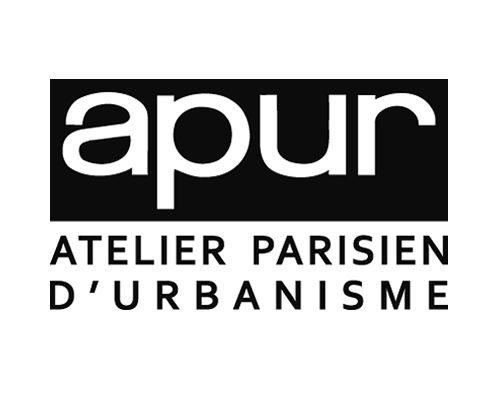

Projets

Enquête sur l'IA
Questionnaire sur l'intégration de l'IA dans l'enseignement.

Digitalisation des commerces parisiens
Ajout de données (site web, livraison, GPS) dans BCOM2023 via Python.
Projet Staging - SAS Institute
Développement d'un outil de staging pour l'amélioration de la qualité des données CRM.